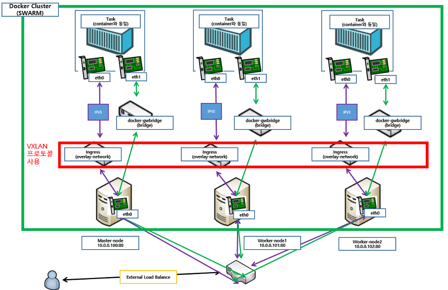
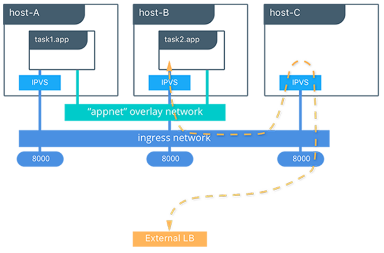
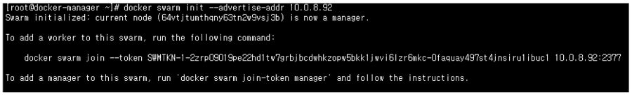
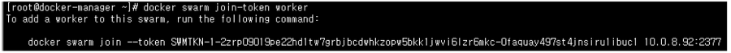
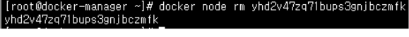
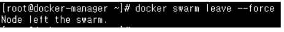
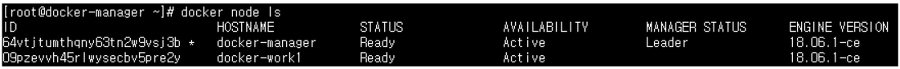
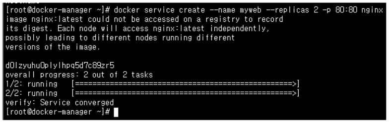
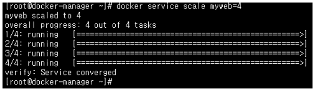
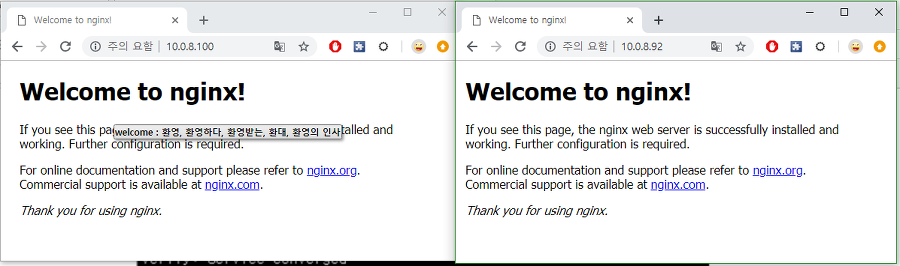

<!DOCTYPE html>
<html>
<head><meta name="generator" content="Hexo 3.8.0">
    <meta charset="utf-8">
    
    <title>Docker Cluster (Linux) | J Dev</title>
    <meta name="viewport" content="width=device-width, initial-scale=1, maximum-scale=1">
    
        <meta name="keywords" content="docker">
    
    <meta name="description" content="Docker cluster - swarmDocker 는 cluster를 구성 하기위해서 swarm 이란 기능을 사용합니다. 1. cluster란 무엇인가?1) 탄생 배경  서버의 부하를 줄이고  최대의 가용성을 뽑아내기 위해서 나온  기술 입니다.   2) 구현 방식  cluster를 구성 하기 위해서는 manager-node와 worker-node가 필요">
<meta name="keywords" content="docker">
<meta property="og:type" content="article">
<meta property="og:title" content="Docker Cluster (Linux)">
<meta property="og:url" content="http://woonyzzang.github.com/2019/08/09/docker-cluster/index.html">
<meta property="og:site_name" content="J Dev">
<meta property="og:description" content="Docker cluster - swarmDocker 는 cluster를 구성 하기위해서 swarm 이란 기능을 사용합니다. 1. cluster란 무엇인가?1) 탄생 배경  서버의 부하를 줄이고  최대의 가용성을 뽑아내기 위해서 나온  기술 입니다.   2) 구현 방식  cluster를 구성 하기 위해서는 manager-node와 worker-node가 필요">
<meta property="og:locale" content="en">
<meta property="og:image" content="http://woonyzzang.github.com/2019/08/09/docker-cluster/docker-cluster_1.png">
<meta property="og:updated_time" content="2019-08-09T05:25:44.073Z">
<meta name="twitter:card" content="summary">
<meta name="twitter:title" content="Docker Cluster (Linux)">
<meta name="twitter:description" content="Docker cluster - swarmDocker 는 cluster를 구성 하기위해서 swarm 이란 기능을 사용합니다. 1. cluster란 무엇인가?1) 탄생 배경  서버의 부하를 줄이고  최대의 가용성을 뽑아내기 위해서 나온  기술 입니다.   2) 구현 방식  cluster를 구성 하기 위해서는 manager-node와 worker-node가 필요">
<meta name="twitter:image" content="http://woonyzzang.github.com/2019/08/09/docker-cluster/docker-cluster_1.png">
    
    <link rel="canonical" href="http://woonyzzang.github.com/2019/08/09/docker-cluster/">

    

    
        <link rel="icon" href="/images/favicon.png">
    

    <link rel="stylesheet" href="/libs/font-awesome/css/font-awesome.min.css">
    <link rel="stylesheet" href="/libs/titillium-web/styles.css">
    <link rel="stylesheet" href="/libs/source-code-pro/styles.css">

    <link rel="stylesheet" href="/css/style.css">

    <script src="/libs/jquery/2.0.3/jquery.min.js"></script>
    
    
        <link rel="stylesheet" href="/libs/lightgallery/css/lightgallery.min.css">
    
    
    

</head>
</html>
<body>
    <div id="wrap">
        <header id="header">
    <div id="header-outer" class="outer">
        <div class="container">
            <div class="container-inner">
                <div id="header-title">
                    <h1 class="logo-wrap">
                        <a href="/" class="logo"></a>
                    </h1>
                    
                        <h2 class="subtitle-wrap">
                            <p class="subtitle">Web Development Story Blog</p>
                        </h2>
                    
                </div>
                <div id="header-inner" class="nav-container">
                    <a id="main-nav-toggle" class="nav-icon fa fa-bars"></a>
                    <div class="nav-container-inner">
                        <ul id="main-nav">
                            
                                <li class="main-nav-list-item">
                                    <a class="main-nav-list-link" href="/">Home</a>
                                </li>
                            
                                        <ul class="main-nav-list"><li class="main-nav-list-item"><a class="main-nav-list-link" href="/categories/App/">App</a><ul class="main-nav-list-child"><li class="main-nav-list-item"><a class="main-nav-list-link" href="/categories/App/Ionic/">Ionic</a></li></ul></li><li class="main-nav-list-item"><a class="main-nav-list-link" href="/categories/Editor/">Editor</a><ul class="main-nav-list-child"><li class="main-nav-list-item"><a class="main-nav-list-link" href="/categories/Editor/SublimeText/">SublimeText</a></li><li class="main-nav-list-item"><a class="main-nav-list-link" href="/categories/Editor/Visualstudio/">Visualstudio</a></li><li class="main-nav-list-item"><a class="main-nav-list-link" href="/categories/Editor/Webstorm/">Webstorm</a></li></ul></li><li class="main-nav-list-item"><a class="main-nav-list-link" href="/categories/Etc/">Etc</a><ul class="main-nav-list-child"><li class="main-nav-list-item"><a class="main-nav-list-link" href="/categories/Etc/Log/">Log</a></li></ul></li><li class="main-nav-list-item"><a class="main-nav-list-link" href="/categories/FrontEnd/">FrontEnd</a><ul class="main-nav-list-child"><li class="main-nav-list-item"><a class="main-nav-list-link" href="/categories/FrontEnd/Angular-js/">Angular.js</a></li><li class="main-nav-list-item"><a class="main-nav-list-link" href="/categories/FrontEnd/Backbone-js/">Backbone.js</a></li><li class="main-nav-list-item"><a class="main-nav-list-link" href="/categories/FrontEnd/D3-js/">D3.js</a></li><li class="main-nav-list-item"><a class="main-nav-list-link" href="/categories/FrontEnd/Javascript-js/">Javascript.js</a></li><li class="main-nav-list-item"><a class="main-nav-list-link" href="/categories/FrontEnd/Node-js/">Node.js</a></li><li class="main-nav-list-item"><a class="main-nav-list-link" href="/categories/FrontEnd/React-js/">React.js</a></li><li class="main-nav-list-item"><a class="main-nav-list-link" href="/categories/FrontEnd/Require-js/">Require.js</a></li><li class="main-nav-list-item"><a class="main-nav-list-link" href="/categories/FrontEnd/Webpack/">Webpack</a></li><li class="main-nav-list-item"><a class="main-nav-list-link" href="/categories/FrontEnd/jQuery/">jQuery</a></li></ul></li><li class="main-nav-list-item"><a class="main-nav-list-link" href="/categories/OS/">OS</a><ul class="main-nav-list-child"><li class="main-nav-list-item"><a class="main-nav-list-link" href="/categories/OS/CentOS/">CentOS</a></li><li class="main-nav-list-item"><a class="main-nav-list-link" href="/categories/OS/Mac/">Mac</a></li><li class="main-nav-list-item"><a class="main-nav-list-link" href="/categories/OS/Ubuntu/">Ubuntu</a></li><li class="main-nav-list-item"><a class="main-nav-list-link" href="/categories/OS/Windows/">Windows</a></li></ul></li><li class="main-nav-list-item"><a class="main-nav-list-link" href="/categories/Server/">Server</a><ul class="main-nav-list-child"><li class="main-nav-list-item"><a class="main-nav-list-link" href="/categories/Server/ASP/">ASP</a></li><li class="main-nav-list-item"><a class="main-nav-list-link" href="/categories/Server/AWS/">AWS</a></li><li class="main-nav-list-item"><a class="main-nav-list-link" href="/categories/Server/Docker/">Docker</a></li><li class="main-nav-list-item"><a class="main-nav-list-link" href="/categories/Server/Gitlab/">Gitlab</a></li></ul></li><li class="main-nav-list-item"><a class="main-nav-list-link" href="/categories/Tools/">Tools</a><ul class="main-nav-list-child"><li class="main-nav-list-item"><a class="main-nav-list-link" href="/categories/Tools/APMSETUP/">APMSETUP</a></li><li class="main-nav-list-item"><a class="main-nav-list-link" href="/categories/Tools/Fiddler/">Fiddler</a></li><li class="main-nav-list-item"><a class="main-nav-list-link" href="/categories/Tools/OpenSSl/">OpenSSl</a></li><li class="main-nav-list-item"><a class="main-nav-list-link" href="/categories/Tools/VMware/">VMware</a></li></ul></li><li class="main-nav-list-item"><a class="main-nav-list-link" href="/categories/Web/">Web</a><ul class="main-nav-list-child"><li class="main-nav-list-item"><a class="main-nav-list-link" href="/categories/Web/CSS/">CSS</a></li><li class="main-nav-list-item"><a class="main-nav-list-link" href="/categories/Web/Descktop/">Descktop</a></li><li class="main-nav-list-item"><a class="main-nav-list-link" href="/categories/Web/HTML/">HTML</a></li><li class="main-nav-list-item"><a class="main-nav-list-link" href="/categories/Web/Mobile/">Mobile</a></li><li class="main-nav-list-item"><a class="main-nav-list-link" href="/categories/Web/Others/">Others</a></li></ul></li></ul>
                                    
                        </ul>
                        <nav id="sub-nav">
                            <div id="search-form-wrap">

    <form class="search-form">
        <input type="text" class="ins-search-input search-form-input" placeholder="Search">
        <button type="submit" class="search-form-submit"></button>
    </form>
    <div class="ins-search">
    <div class="ins-search-mask"></div>
    <div class="ins-search-container">
        <div class="ins-input-wrapper">
            <input type="text" class="ins-search-input" placeholder="Type something...">
            <span class="ins-close ins-selectable"><i class="fa fa-times-circle"></i></span>
        </div>
        <div class="ins-section-wrapper">
            <div class="ins-section-container"></div>
        </div>
    </div>
</div>
<script>
(function (window) {
    var INSIGHT_CONFIG = {
        TRANSLATION: {
            POSTS: 'Posts',
            PAGES: 'Pages',
            CATEGORIES: 'Categories',
            TAGS: 'Tags',
            UNTITLED: '(Untitled)',
        },
        ROOT_URL: '/',
        CONTENT_URL: '/content.json',
    };
    window.INSIGHT_CONFIG = INSIGHT_CONFIG;
})(window);
</script>
<script src="/js/insight.js"></script>

</div>
                        </nav>
                    </div>
                </div>
            </div>
        </div>
    </div>
</header>
        <div class="container">
            <div class="main-body container-inner">
                <div class="main-body-inner">
                    <section id="main">
                        <div class="main-body-header">
    <h1 class="header">
    
    <a class="page-title-link" href="/categories/Server/">Server</a><i class="icon fa fa-angle-right"></i><a class="page-title-link" href="/categories/Server/Docker/">Docker</a>
    </h1>
</div>
                        <div class="main-body-content">
                            <article id="post-docker-cluster" class="article article-single article-type-post" itemscope="" itemprop="blogPost">
    <div class="article-inner">
        
            <header class="article-header">
                
    
        <h1 class="article-title" itemprop="name">
        Docker Cluster (Linux)
        </h1>
    

            </header>
        
        
            <div class="article-subtitle">
                <a href="/2019/08/09/docker-cluster/" class="article-date">
    <time datetime="2019-08-09T05:17:36.000Z" itemprop="datePublished">2019-08-09</time>
</a>
                
    <ul class="article-tag-list"><li class="article-tag-list-item"><a class="article-tag-list-link" href="/tags/docker/">docker</a></li></ul>

            </div>
        
        
        <div class="article-entry" itemprop="articleBody">
            <h3 id="Docker-cluster-swarm"><a href="#Docker-cluster-swarm" class="headerlink" title="Docker cluster - swarm"></a>Docker cluster - swarm</h3><p>Docker 는 cluster를 구성 하기위해서 swarm 이란 기능을 사용합니다.</p>
<h3 id="1-cluster란-무엇인가"><a href="#1-cluster란-무엇인가" class="headerlink" title="1. cluster란 무엇인가?"></a>1. cluster란 무엇인가?</h3><p><strong>1) 탄생 배경</strong></p>
<ul>
<li>서버의 부하를 줄이고  최대의 가용성을 뽑아내기 위해서 나온  기술 입니다. </li>
</ul>
<p><strong>2) 구현 방식</strong></p>
<ul>
<li>cluster를 구성 하기 위해서는 manager-node와 worker-node가 필요 합니다.<ul>
<li>manger-node: worker-node를 관리 합니다.</li>
<li>worker-node: service를 제공합니다.</li>
</ul>
</li>
<li>cluster는 worker node를 묶어서 서비스를 제공 합니다.</li>
</ul>
<p><strong>3) 동작 원리</strong></p>
<ul>
<li>Web 서비스를 예를 들면 한개의 도메인(google.com)에 cluster로 묶인 서버(worker-node)를 사용하여 서비스를 제공할 경우 사용자는 매번 google.com에 접속시 cluster로 묶인 서버(worker-node) 중 한대를 접속 할 수 있게 됩니다.</li>
</ul>
<h3 id="2-Docker-swarm이란-무엇인가"><a href="#2-Docker-swarm이란-무엇인가" class="headerlink" title="2. Docker swarm이란 무엇인가?"></a>2. Docker swarm이란 무엇인가?</h3><ul>
<li>Docker에서 제공하는 cluster 입니다.</li>
<li>제공하는 기능은 다음과 같습니다.</li>
</ul>
<p><strong>1) docker engine 통합 관리</strong> </p>
<ul>
<li>docker manager-node에서 worker-node를 통합 관리 할 수 있습니다.</li>
</ul>
<p><strong>2) load balancing</strong></p>
<ul>
<li>부하 분산 기능으로 외부에서 worker-node 접속시 round robin 방식으로 worker-node의 task를 연결 해 줍니다.</li>
</ul>
<p><strong>3) task 개수 조절 기능 (scale)</strong></p>
<ul>
<li>scale 옵션을 통하여 service할 task의 개수를 조절 합니다.</li>
</ul>
<ul>
<li>task는 node에서 제공하는 docker swarm에서 생성한 service를 의미 하며 service는 container와 동일 한 역활을 합니다.<br>단지 swarm에서 구분을 하기위 해서 task라고 사용 합니다.</li>
</ul>
<p><strong>4) multi-host-networking</strong></p>
<ul>
<li>overlay network 를 통하여 task 간 사용할 수 있는 네트워크를 제공</li>
</ul>
<p><strong>5) 내장 DNS 서버 제공</strong></p>
<ul>
<li>service에서 DNS name을 할 당하여 swarm 내에있는 node에서는 내장 DNS 서버를 사용 할 수 있습니다.</li>
</ul>
<h3 id="3-Docker-swarm의-종류"><a href="#3-Docker-swarm의-종류" class="headerlink" title="3. Docker swarm의 종류"></a>3. Docker swarm의 종류</h3><p><strong>1) docker warm mode</strong></p>
<ul>
<li>manager-node와 worker-node가 한 host에 공존하는 모드, 즉 manager-node또 worker-node 기능을 수행 하는 모드 입니다.</li>
</ul>
<p><strong>2) docker swarm</strong></p>
<ul>
<li>manager-node와 worker-node를 따로 구성 하는 모드(대규모 에서 사용합니다)</li>
</ul>
<h3 id="4-Docker-swarm-mode-물리-적인-구조"><a href="#4-Docker-swarm-mode-물리-적인-구조" class="headerlink" title="4. Docker swarm mode 물리 적인 구조"></a>4. Docker swarm mode 물리 적인 구조</h3><ul>
<li>manager-node 및 worker-node는 docker warm생성시 제공하는 ingress(overlay network) 로 연결 되어 있습니다.</li>
<li>ingress(overlay-network)는 task간의 통신 및 load balancing 할 때만 사용 이 됩니다.</li>
<li>Load balancing은 IPVS 라는 기술을 사용하여 수행 됩니다.</li>
</ul>
<ul>
<li>IPVS (IP Virtual Server) implement s transport-layer load balancing, usually called Layer 4 LAN switching, as part of the Linux kernel. It’s configured via the user-space utility ipvsadm tool.</li>
</ul>
<p></p>
<h3 id="5-Docker-swarm-mode의-Load-Balancing-방식"><a href="#5-Docker-swarm-mode의-Load-Balancing-방식" class="headerlink" title="5. Docker swarm mode의 Load Balancing 방식"></a>5. Docker swarm mode의 Load Balancing 방식</h3><ul>
<li>외부에서 어떤 host에 접근 하더라도 <code>IPVS와 ingress network</code>를 사용하여 worker-node들이 제공하는 모든 task에 접속 가능 합니다.</li>
</ul>
<p></p>
<h3 id="6-Docker-swarm-mode-사용법"><a href="#6-Docker-swarm-mode-사용법" class="headerlink" title="6. Docker swarm mode 사용법"></a>6. Docker swarm mode 사용법</h3><p><strong>1) swarm mode cluster 구축</strong></p>
<figure class="highlight bash"><table><tr><td class="gutter"><pre><span class="line">1</span><br></pre></td><td class="code"><pre><span class="line">$ docker swarm init --advertise-addr 10.0.8.92</span><br></pre></td></tr></table></figure>
<p></p>
<p><strong>2) node 생성</strong><br>(1) manager node 생성</p>
<ul>
<li>swarm init을 수행 곳이 manager node가 됩니다.</li>
</ul>
<p>(2) worker-node 생성</p>
<ul>
<li>swarm mode cluster에 참여 하면 worker-node가 됩니다.</li>
<li>참여 방법은 docker swarm init 을 했을 때 나오는 명령어를 사용하여 cluster 참여가 가능 합니다.</li>
</ul>
<figure class="highlight bash"><table><tr><td class="gutter"><pre><span class="line">1</span><br></pre></td><td class="code"><pre><span class="line">$ docker swarm join --token SWMTKN-1-2zrp09019pe22hd1tw7grbjbcdwhkzopw5bkk1jwvi6lzr6mkc-0faquay497st4jnsiru1ibuc1 10.0.8.92:2377</span><br></pre></td></tr></table></figure>
<ul>
<li>나중에 cluster 참가 token을 잊어버리는 경우에는 <code>docker swarm join-token worker</code> 명령어로 확인 가능 합니다.<br></li>
</ul>
<p>(3) node 제거</p>
<figure class="highlight bash"><table><tr><td class="gutter"><pre><span class="line">1</span><br></pre></td><td class="code"><pre><span class="line">$ docker swarm rm &#123;node name&#125;</span><br></pre></td></tr></table></figure>
<p></p>
<p>(4) cluster 종료</p>
<figure class="highlight bash"><table><tr><td class="gutter"><pre><span class="line">1</span><br></pre></td><td class="code"><pre><span class="line">$ docker swarm leave [--force]</span><br></pre></td></tr></table></figure>
<ul>
<li>–force 는 manager node가 cluster를 떠날 때 사용 합니다.</li>
</ul>
<p></p>
<p><strong>3) cluster 상태 확인</strong></p>
<figure class="highlight bash"><table><tr><td class="gutter"><pre><span class="line">1</span><br></pre></td><td class="code"><pre><span class="line">$ docker node ls</span><br></pre></td></tr></table></figure>
<ul>
<li>MANAGER STATUS에서 Leader로 되어있는 node가 manager node 입니다.</li>
</ul>
<p></p>
<p><strong>4) node에 service 배포 하기 (manager-node에서만 가능)</strong></p>
<figure class="highlight bash"><table><tr><td class="gutter"><pre><span class="line">1</span><br></pre></td><td class="code"><pre><span class="line">$ docker service create --name myweb --replicas 2 -p 80:80 nginx</span><br></pre></td></tr></table></figure>
<ul>
<li>– name: service 이름</li>
<li>– replicas: 생서 할 task의 개수</li>
<li>-p: port mapping</li>
<li>nginx: service할 image 파일</li>
</ul>
<p></p>
<p><strong>5) service 개수 조절 하기</strong></p>
<figure class="highlight bash"><table><tr><td class="gutter"><pre><span class="line">1</span><br></pre></td><td class="code"><pre><span class="line">$ docker service scale myweb=4</span><br></pre></td></tr></table></figure>
<ul>
<li>scale: task 개수를 조절 하겠다는 의미</li>
<li>myweb = 4: myweb service의 task를 4개로 한다.</li>
</ul>
<p></p>
<p><strong>6) service 삭제 하기</strong></p>
<figure class="highlight bash"><table><tr><td class="gutter"><pre><span class="line">1</span><br></pre></td><td class="code"><pre><span class="line">$ docker service rm myweb</span><br></pre></td></tr></table></figure>
<ul>
<li>myweb : 삭제할 service 이름</li>
</ul>
<h3 id="6-Docker-swarm-mode-TEST"><a href="#6-Docker-swarm-mode-TEST" class="headerlink" title="6. Docker swarm mode TEST"></a>6. Docker swarm mode TEST</h3><ul>
<li>manager-node 에서 service를 올렸지만 worker-node에 접속을 해도 잘 나오는 것을 확인 할수 있습니다.</li>
</ul>
<p>1) 10.0.8.92(master-node)<br>2) 10.0.8.100(worker-node)</p>
<p></p>
<p>docker swarm은 부하 분산을 하기위해서 web서비스에서 꼭 필요한 기능 입니다.</p>
<h3 id="참조"><a href="#참조" class="headerlink" title="참조"></a>참조</h3><ul>
<li><a href="https://doitnow-man.tistory.com/190" target="_blank" rel="noopener">https://doitnow-man.tistory.com/190</a></li>
</ul>

        </div>
        <footer class="article-footer">
            


    <a data-url="http://woonyzzang.github.com/2019/08/09/docker-cluster/" data-id="ck0uxw5jx003bj49kj213638x" class="article-share-link"><i class="fa fa-share"></i>Share</a>
<script>
    (function ($) {
        $('body').on('click', function() {
            $('.article-share-box.on').removeClass('on');
        }).on('click', '.article-share-link', function(e) {
            e.stopPropagation();

            var $this = $(this),
                url = $this.attr('data-url'),
                encodedUrl = encodeURIComponent(url),
                id = 'article-share-box-' + $this.attr('data-id'),
                offset = $this.offset(),
                box;

            if ($('#' + id).length) {
                box = $('#' + id);

                if (box.hasClass('on')){
                    box.removeClass('on');
                    return;
                }
            } else {
                var html = [
                    '<div id="' + id + '" class="article-share-box">',
                        '<input class="article-share-input" value="' + url + '">',
                        '<div class="article-share-links">',
                            '<a href="https://twitter.com/intent/tweet?url=' + encodedUrl + '" class="article-share-twitter" target="_blank" title="Twitter"></a>',
                            '<a href="https://www.facebook.com/sharer.php?u=' + encodedUrl + '" class="article-share-facebook" target="_blank" title="Facebook"></a>',
                            '<a href="http://pinterest.com/pin/create/button/?url=' + encodedUrl + '" class="article-share-pinterest" target="_blank" title="Pinterest"></a>',
                            '<a href="https://plus.google.com/share?url=' + encodedUrl + '" class="article-share-google" target="_blank" title="Google+"></a>',
                        '</div>',
                    '</div>'
                ].join('');

              box = $(html);

              $('body').append(box);
            }

            $('.article-share-box.on').hide();

            box.css({
                top: offset.top + 25,
                left: offset.left
            }).addClass('on');

        }).on('click', '.article-share-box', function (e) {
            e.stopPropagation();
        }).on('click', '.article-share-box-input', function () {
            $(this).select();
        }).on('click', '.article-share-box-link', function (e) {
            e.preventDefault();
            e.stopPropagation();

            window.open(this.href, 'article-share-box-window-' + Date.now(), 'width=500,height=450');
        });
    })(jQuery);
</script>

        </footer>
    </div>
</article>

    <section id="comments">
    
        
    <div id="disqus_thread">
        <noscript>Please enable JavaScript to view the <a href="//disqus.com/?ref_noscript">comments powered by Disqus.</a></noscript>
    </div>

    
    </section>


                        </div>
                    </section>
                    <aside id="sidebar">
    <a class="sidebar-toggle" title="Expand Sidebar"><i class="toggle icon"></i></a>
    <div class="sidebar-top">
        <p>follow:</p>
        <ul class="social-links">
            
                
                <li>
                    <a class="social-tooltip" title="github" href="https://github.com/woonyzzang/" target="_blank">
                        <i class="icon fa fa-github"></i>
                    </a>
                </li>
                
            
                
                <li>
                    <a class="social-tooltip" title="cloud" href="http://j-portfolio.herokuapp.com/" target="_blank">
                        <i class="icon fa fa-cloud"></i>
                    </a>
                </li>
                
            
                
                <li>
                    <a class="social-tooltip" title="jsfiddle" href="https://jsfiddle.net/user/woonyzzang/fiddles/" target="_blank">
                        <i class="icon fa fa-jsfiddle"></i>
                    </a>
                </li>
                
            
        </ul>
    </div>
    <!-- github card -->
    
    <div class="github-card" data-github="woonyzzang" data-width="100%" data-height="150" data-theme="default"></div>
    
    <script src="/libs/github-cards/widget.min.js"></script>
    <!-- //github card -->
    
        
<nav id="article-nav">
    
        <a href="/2019/08/09/descktop-web-input-number-maxlength/" id="article-nav-newer" class="article-nav-link-wrap">
        <strong class="article-nav-caption">newer</strong>
        <p class="article-nav-title">
        
            Descktop Web Input number 타입의 속성 maxlength 사용
        
        </p>
        <i class="icon fa fa-chevron-right" id="icon-chevron-right"></i>
    </a>
    
    
        <a href="/2019/08/09/docker-network/" id="article-nav-older" class="article-nav-link-wrap">
        <strong class="article-nav-caption">older</strong>
        <p class="article-nav-title">Docker 네트워크 (Linux)</p>
        <i class="icon fa fa-chevron-left" id="icon-chevron-left"></i>
        </a>
    
</nav>

    
    <div class="widgets-container">
        
            
                
    <div class="widget-wrap widget-list">
        <h3 class="widget-title">categories</h3>
        <div class="widget">
            <ul class="category-list"><li class="category-list-item"><a class="category-list-link" href="/categories/App/">App</a><span class="category-list-count">6</span><ul class="category-list-child"><li class="category-list-item"><a class="category-list-link" href="/categories/App/Ionic/">Ionic</a><span class="category-list-count">6</span></li></ul></li><li class="category-list-item"><a class="category-list-link" href="/categories/Editor/">Editor</a><span class="category-list-count">10</span><ul class="category-list-child"><li class="category-list-item"><a class="category-list-link" href="/categories/Editor/SublimeText/">SublimeText</a><span class="category-list-count">3</span></li><li class="category-list-item"><a class="category-list-link" href="/categories/Editor/Visualstudio/">Visualstudio</a><span class="category-list-count">1</span></li><li class="category-list-item"><a class="category-list-link" href="/categories/Editor/Webstorm/">Webstorm</a><span class="category-list-count">6</span></li></ul></li><li class="category-list-item"><a class="category-list-link" href="/categories/Etc/">Etc</a><span class="category-list-count">2</span><ul class="category-list-child"><li class="category-list-item"><a class="category-list-link" href="/categories/Etc/Log/">Log</a><span class="category-list-count">2</span></li></ul></li><li class="category-list-item"><a class="category-list-link" href="/categories/FrontEnd/">FrontEnd</a><span class="category-list-count">58</span><ul class="category-list-child"><li class="category-list-item"><a class="category-list-link" href="/categories/FrontEnd/Angular-js/">Angular.js</a><span class="category-list-count">2</span></li><li class="category-list-item"><a class="category-list-link" href="/categories/FrontEnd/Backbone-js/">Backbone.js</a><span class="category-list-count">6</span></li><li class="category-list-item"><a class="category-list-link" href="/categories/FrontEnd/D3-js/">D3.js</a><span class="category-list-count">9</span></li><li class="category-list-item"><a class="category-list-link" href="/categories/FrontEnd/Javascript-js/">Javascript.js</a><span class="category-list-count">21</span></li><li class="category-list-item"><a class="category-list-link" href="/categories/FrontEnd/Node-js/">Node.js</a><span class="category-list-count">1</span></li><li class="category-list-item"><a class="category-list-link" href="/categories/FrontEnd/React-js/">React.js</a><span class="category-list-count">12</span></li><li class="category-list-item"><a class="category-list-link" href="/categories/FrontEnd/Require-js/">Require.js</a><span class="category-list-count">2</span></li><li class="category-list-item"><a class="category-list-link" href="/categories/FrontEnd/Webpack/">Webpack</a><span class="category-list-count">3</span></li><li class="category-list-item"><a class="category-list-link" href="/categories/FrontEnd/jQuery/">jQuery</a><span class="category-list-count">2</span></li></ul></li><li class="category-list-item"><a class="category-list-link" href="/categories/OS/">OS</a><span class="category-list-count">26</span><ul class="category-list-child"><li class="category-list-item"><a class="category-list-link" href="/categories/OS/CentOS/">CentOS</a><span class="category-list-count">7</span></li><li class="category-list-item"><a class="category-list-link" href="/categories/OS/Mac/">Mac</a><span class="category-list-count">5</span></li><li class="category-list-item"><a class="category-list-link" href="/categories/OS/Ubuntu/">Ubuntu</a><span class="category-list-count">4</span></li><li class="category-list-item"><a class="category-list-link" href="/categories/OS/Windows/">Windows</a><span class="category-list-count">10</span></li></ul></li><li class="category-list-item"><a class="category-list-link" href="/categories/Server/">Server</a><span class="category-list-count">12</span><ul class="category-list-child"><li class="category-list-item"><a class="category-list-link" href="/categories/Server/ASP/">ASP</a><span class="category-list-count">4</span></li><li class="category-list-item"><a class="category-list-link" href="/categories/Server/AWS/">AWS</a><span class="category-list-count">1</span></li><li class="category-list-item"><a class="category-list-link" href="/categories/Server/Docker/">Docker</a><span class="category-list-count">6</span></li><li class="category-list-item"><a class="category-list-link" href="/categories/Server/Gitlab/">Gitlab</a><span class="category-list-count">1</span></li></ul></li><li class="category-list-item"><a class="category-list-link" href="/categories/Tools/">Tools</a><span class="category-list-count">5</span><ul class="category-list-child"><li class="category-list-item"><a class="category-list-link" href="/categories/Tools/APMSETUP/">APMSETUP</a><span class="category-list-count">1</span></li><li class="category-list-item"><a class="category-list-link" href="/categories/Tools/Fiddler/">Fiddler</a><span class="category-list-count">2</span></li><li class="category-list-item"><a class="category-list-link" href="/categories/Tools/OpenSSl/">OpenSSl</a><span class="category-list-count">1</span></li><li class="category-list-item"><a class="category-list-link" href="/categories/Tools/VMware/">VMware</a><span class="category-list-count">1</span></li></ul></li><li class="category-list-item"><a class="category-list-link" href="/categories/Web/">Web</a><span class="category-list-count">18</span><ul class="category-list-child"><li class="category-list-item"><a class="category-list-link" href="/categories/Web/CSS/">CSS</a><span class="category-list-count">6</span></li><li class="category-list-item"><a class="category-list-link" href="/categories/Web/Descktop/">Descktop</a><span class="category-list-count">2</span></li><li class="category-list-item"><a class="category-list-link" href="/categories/Web/HTML/">HTML</a><span class="category-list-count">1</span></li><li class="category-list-item"><a class="category-list-link" href="/categories/Web/Mobile/">Mobile</a><span class="category-list-count">5</span></li><li class="category-list-item"><a class="category-list-link" href="/categories/Web/Others/">Others</a><span class="category-list-count">4</span></li></ul></li></ul>
        </div>
    </div>


            
                
    <div class="widget-wrap widget-list">
        <h3 class="widget-title">archives</h3>
        <div class="widget">
            <ul class="archive-list"><li class="archive-list-item"><a class="archive-list-link" href="/archives/2019/09/">September 2019</a><span class="archive-list-count">7</span></li><li class="archive-list-item"><a class="archive-list-link" href="/archives/2019/08/">August 2019</a><span class="archive-list-count">22</span></li><li class="archive-list-item"><a class="archive-list-link" href="/archives/2019/03/">March 2019</a><span class="archive-list-count">1</span></li><li class="archive-list-item"><a class="archive-list-link" href="/archives/2018/11/">November 2018</a><span class="archive-list-count">3</span></li><li class="archive-list-item"><a class="archive-list-link" href="/archives/2018/04/">April 2018</a><span class="archive-list-count">2</span></li><li class="archive-list-item"><a class="archive-list-link" href="/archives/2017/11/">November 2017</a><span class="archive-list-count">3</span></li><li class="archive-list-item"><a class="archive-list-link" href="/archives/2017/10/">October 2017</a><span class="archive-list-count">4</span></li><li class="archive-list-item"><a class="archive-list-link" href="/archives/2017/08/">August 2017</a><span class="archive-list-count">1</span></li><li class="archive-list-item"><a class="archive-list-link" href="/archives/2017/07/">July 2017</a><span class="archive-list-count">5</span></li><li class="archive-list-item"><a class="archive-list-link" href="/archives/2017/06/">June 2017</a><span class="archive-list-count">3</span></li><li class="archive-list-item"><a class="archive-list-link" href="/archives/2017/05/">May 2017</a><span class="archive-list-count">33</span></li><li class="archive-list-item"><a class="archive-list-link" href="/archives/2017/04/">April 2017</a><span class="archive-list-count">10</span></li><li class="archive-list-item"><a class="archive-list-link" href="/archives/2017/03/">March 2017</a><span class="archive-list-count">25</span></li><li class="archive-list-item"><a class="archive-list-link" href="/archives/2017/02/">February 2017</a><span class="archive-list-count">19</span></li></ul>
        </div>
    </div>


            
                
    <div class="widget-wrap widget-float">
        <h3 class="widget-title">tag cloud</h3>
        <div class="widget tagcloud">
            <a href="/tags/angular-v1/" style="font-size: 11px;">angular v1</a> <a href="/tags/apmsetup/" style="font-size: 10px;">apmsetup</a> <a href="/tags/asp/" style="font-size: 13px;">asp</a> <a href="/tags/aws/" style="font-size: 10px;">aws</a> <a href="/tags/backbone/" style="font-size: 15px;">backbone</a> <a href="/tags/centos/" style="font-size: 16px;">centos</a> <a href="/tags/chrome/" style="font-size: 12px;">chrome</a> <a href="/tags/css/" style="font-size: 15px;">css</a> <a href="/tags/css3/" style="font-size: 15px;">css3</a> <a href="/tags/d3/" style="font-size: 17px;">d3</a> <a href="/tags/descktop/" style="font-size: 11px;">descktop</a> <a href="/tags/docker/" style="font-size: 15px;">docker</a> <a href="/tags/es6/" style="font-size: 13px;">es6</a> <a href="/tags/fiddler/" style="font-size: 11px;">fiddler</a> <a href="/tags/gitlab/" style="font-size: 10px;">gitlab</a> <a href="/tags/html/" style="font-size: 10px;">html</a> <a href="/tags/html5/" style="font-size: 10px;">html5</a> <a href="/tags/ionic-v1/" style="font-size: 14px;">ionic v1</a> <a href="/tags/ionic-v2/" style="font-size: 10px;">ionic v2</a> <a href="/tags/jquery/" style="font-size: 11px;">jquery</a> <a href="/tags/js/" style="font-size: 20px;">js</a> <a href="/tags/linux/" style="font-size: 18px;">linux</a> <a href="/tags/log/" style="font-size: 11px;">log</a> <a href="/tags/mac/" style="font-size: 14px;">mac</a> <a href="/tags/markdown/" style="font-size: 10px;">markdown</a> <a href="/tags/mobile/" style="font-size: 18px;">mobile</a> <a href="/tags/node/" style="font-size: 10px;">node</a> <a href="/tags/openssl/" style="font-size: 10px;">openssl</a> <a href="/tags/others/" style="font-size: 13px;">others</a> <a href="/tags/react/" style="font-size: 19px;">react</a> <a href="/tags/require/" style="font-size: 11px;">require</a> <a href="/tags/server/" style="font-size: 16px;">server</a> <a href="/tags/sublimeText/" style="font-size: 12px;">sublimeText</a> <a href="/tags/tip/" style="font-size: 11px;">tip</a> <a href="/tags/ubuntu/" style="font-size: 13px;">ubuntu</a> <a href="/tags/visualstudio/" style="font-size: 10px;">visualstudio</a> <a href="/tags/visualsvn/" style="font-size: 10px;">visualsvn</a> <a href="/tags/vmware/" style="font-size: 11px;">vmware</a> <a href="/tags/webpack/" style="font-size: 12px;">webpack</a> <a href="/tags/webpack-v2/" style="font-size: 11px;">webpack v2</a> <a href="/tags/webstorm/" style="font-size: 15px;">webstorm</a> <a href="/tags/windows/" style="font-size: 18px;">windows</a>
        </div>
    </div>


            
                
    <div class="widget-wrap widget-list">
        <h3 class="widget-title">links</h3>
        <div class="widget">
            <ul>
                
                    <li>
                        <a href="http://j-portfolio.herokuapp.com/dev/cms/">CMS Theme</a>
                    </li>
                
                    <li>
                        <a href="http://j-portfolio.herokuapp.com/dev/listmap/listmap.xml">Markup Listmap</a>
                    </li>
                
                    <li>
                        <a href="https://github.com/woonyzzang/j-generator-css3">J Generator CSS3</a>
                    </li>
                
                    <li>
                        <a href="https://github.com/woonyzzang/j-html5-reference">J HTML5 Open Reference</a>
                    </li>
                
                    <li>
                        <a href="https://github.com/woonyzzang/j-prototype">J Prototype</a>
                    </li>
                
                    <li>
                        <a href="https://github.com/woonyzzang/j-draft-design">J Draft Design Gallery</a>
                    </li>
                
                    <li>
                        <a href="https://github.com/woonyzzang/j-responsive-design-view">J Responsive Design View</a>
                    </li>
                
                    <li>
                        <a href="https://github.com/woonyzzang/j-memo">J Memo</a>
                    </li>
                
                    <li>
                        <a href="https://github.com/woonyzzang/j-hiworks-mail-notifier">J Hiworks Notifier</a>
                    </li>
                
                    <li>
                        <a href="https://github.com/woonyzzang/j-core-module">J Core Module</a>
                    </li>
                
                    <li>
                        <a href="https://github.com/woonyzzang/j-core-editor">J Core Editor</a>
                    </li>
                
                    <li>
                        <a href="https://github.com/woonyzzang/j-cheat-sheet-api">J Cheat Sheet API</a>
                    </li>
                
            </ul>
        </div>
    </div>


            
        
    </div>
</aside>
                </div>
            </div>
        </div>
        <footer id="footer">
    <div class="container">
        <div class="container-inner">
            <a id="back-to-top" href="javascript:;"><i class="icon fa fa-angle-up"></i></a>
            <div class="credit">
                <h1 class="logo-wrap">
                    <a href="/" class="logo"></a>
                </h1>
                <p>&copy; 2019 woonyzzang</p>
                <p>Powered by <a href="//hexo.io/" target="_blank">Hexo</a>. Theme by <a href="//github.com/ppoffice" target="_blank">PPOffice</a></p>
            </div>
        </div>
    </div>
</footer>
        
    
    <script>
    var disqus_shortname = 'hexo-theme-hueman';
    
    
    var disqus_url = 'http://woonyzzang.github.com/2019/08/09/docker-cluster/';
    
    (function() {
    var dsq = document.createElement('script');
    dsq.type = 'text/javascript';
    dsq.async = true;
    dsq.src = '//' + disqus_shortname + '.disqus.com/embed.js';
    (document.getElementsByTagName('head')[0] || document.getElementsByTagName('body')[0]).appendChild(dsq);
    })();
    </script>


    
        <script src="/libs/lightgallery/js/lightgallery.min.js"></script>
        <script src="/libs/lightgallery/js/lg-thumbnail.min.js"></script>
        <script src="/libs/lightgallery/js/lg-pager.min.js"></script>
        <script src="/libs/lightgallery/js/lg-autoplay.min.js"></script>
        <script src="/libs/lightgallery/js/lg-fullscreen.min.js"></script>
        <script src="/libs/lightgallery/js/lg-zoom.min.js"></script>
        <script src="/libs/lightgallery/js/lg-hash.min.js"></script>
        <script src="/libs/lightgallery/js/lg-share.min.js"></script>
        <script src="/libs/lightgallery/js/lg-video.min.js"></script>
    


<!-- Custom Scripts -->
<script src="/js/main.js"></script>

    </div>
</body>
</html>
